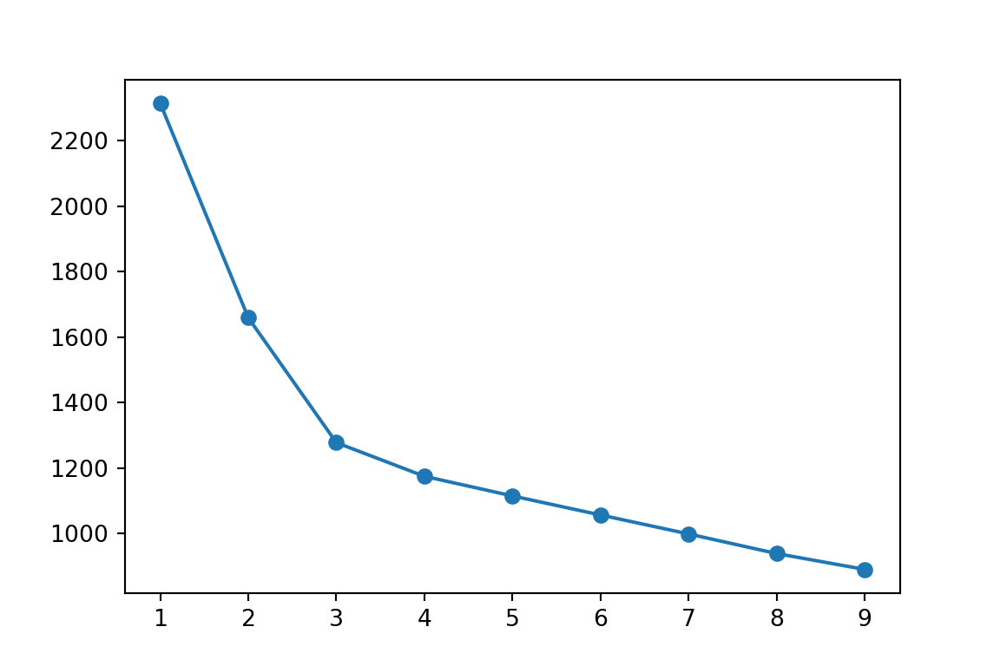

import matplotlib.pyplot as plt
from sklearn import preprocessing
from sklearn.cluster import KMeans
from sklearn.metrics import silhouette_score
import pandas as pdwine_original=pd.read_csv('./data/wines.csv')
# Examine data
wine_original.head()## Alcohol Malic acid Ash ... OD280/OD315 of diluted wines Proline Region
## 0 14.23 1.71 2.43 ... 3.92 1065 South
## 1 13.20 1.78 2.14 ... 3.40 1050 South
## 2 13.16 2.36 2.67 ... 3.17 1185 South
## 3 14.37 1.95 2.50 ... 3.45 1480 South
## 4 13.24 2.59 2.87 ... 2.93 735 South
##
## [5 rows x 14 columns]wine_original## Alcohol Malic acid Ash ... OD280/OD315 of diluted wines Proline Region
## 0 14.23 1.71 2.43 ... 3.92 1065 South
## 1 13.20 1.78 2.14 ... 3.40 1050 South
## 2 13.16 2.36 2.67 ... 3.17 1185 South
## 3 14.37 1.95 2.50 ... 3.45 1480 South
## 4 13.24 2.59 2.87 ... 2.93 735 South
## .. ... ... ... ... ... ... ...
## 173 13.71 5.65 2.45 ... 1.74 740 East
## 174 13.40 3.91 2.48 ... 1.56 750 East
## 175 13.27 4.28 2.26 ... 1.56 835 East
## 176 13.17 2.59 2.37 ... 1.62 840 East
## 177 14.13 4.10 2.74 ... 1.60 560 East
##
## [178 rows x 14 columns]wine_df = wine_original.drop(columns="Region")
wine_df## Alcohol Malic acid Ash ... Hue OD280/OD315 of diluted wines Proline
## 0 14.23 1.71 2.43 ... 1.04 3.92 1065
## 1 13.20 1.78 2.14 ... 1.05 3.40 1050
## 2 13.16 2.36 2.67 ... 1.03 3.17 1185
## 3 14.37 1.95 2.50 ... 0.86 3.45 1480
## 4 13.24 2.59 2.87 ... 1.04 2.93 735
## .. ... ... ... ... ... ... ...
## 173 13.71 5.65 2.45 ... 0.64 1.74 740
## 174 13.40 3.91 2.48 ... 0.70 1.56 750
## 175 13.27 4.28 2.26 ... 0.59 1.56 835
## 176 13.17 2.59 2.37 ... 0.60 1.62 840
## 177 14.13 4.10 2.74 ... 0.61 1.60 560
##
## [178 rows x 13 columns]scaler = preprocessing.StandardScaler().fit(wine_df)
scaler
#Z-transform
## StandardScaler()wine_df_scaled = pd.DataFrame(scaler.fit_transform(wine_df), columns=wine_df.columns, index=wine_df.index)
wine_df_scaled## Alcohol Malic acid ... OD280/OD315 of diluted wines Proline
## 0 1.518613 -0.562250 ... 1.847920 1.013009
## 1 0.246290 -0.499413 ... 1.113449 0.965242
## 2 0.196879 0.021231 ... 0.788587 1.395148
## 3 1.691550 -0.346811 ... 1.184071 2.334574
## 4 0.295700 0.227694 ... 0.449601 -0.037874
## .. ... ... ... ... ...
## 173 0.876275 2.974543 ... -1.231206 -0.021952
## 174 0.493343 1.412609 ... -1.485445 0.009893
## 175 0.332758 1.744744 ... -1.485445 0.280575
## 176 0.209232 0.227694 ... -1.400699 0.296498
## 177 1.395086 1.583165 ... -1.428948 -0.595160
##
## [178 rows x 13 columns]#Elbow with default libs
cluster_range = range(1, 10)
cluster_errors = []
for num_clusters in cluster_range:
clusters=KMeans(num_clusters)
clusters.fit(wine_df_scaled)
cluster_errors.append(clusters.inertia_)
## KMeans(n_clusters=1)
## KMeans(n_clusters=2)
## KMeans(n_clusters=3)
## KMeans(n_clusters=4)
## KMeans(n_clusters=5)
## KMeans(n_clusters=6)
## KMeans(n_clusters=7)
## KMeans()
## KMeans(n_clusters=9)
##
## E:\Users\User\anaconda3\lib\site-packages\sklearn\cluster\_kmeans.py:1037: UserWarning: KMeans is known to have a memory leak on Windows with MKL, when there are less chunks than available threads. You can avoid it by setting the environment variable OMP_NUM_THREADS=1.
## "KMeans is known to have a memory leak on Windows "plt.figure(figsize=(6,4))
plt.plot(cluster_range,cluster_errors,marker="o")
plt.show()
#https://scikit-learn.org/stable/auto_examples/cluster/plot_kmeans_silhouette_analysis.html
#Silhouette scores from library
range_n_clusters = range(2, 10)
for n_clusters in range_n_clusters:
# Initialize the clusterer with n_clusters value and a random generator
# seed of 10 for reproducibility.
clusterer = KMeans(n_clusters=n_clusters, random_state=10)
cluster_labels = clusterer.fit_predict(wine_df_scaled)
# The silhouette_score gives the average value for all the samples.
# This gives a perspective into the density and separation of the formed
# clusters
silhouette_avg = silhouette_score(wine_df_scaled, cluster_labels)
#Choose the one with the highest sil score
print("For n_clusters =", n_clusters,
"The average silhouette_score is :", silhouette_avg)
## For n_clusters = 2 The average silhouette_score is : 0.26831340971052126
## For n_clusters = 3 The average silhouette_score is : 0.2848589191898987
## For n_clusters = 4 The average silhouette_score is : 0.24519129323772165
## For n_clusters = 5 The average silhouette_score is : 0.23223087806001866
## For n_clusters = 6 The average silhouette_score is : 0.23533337693317755
## For n_clusters = 7 The average silhouette_score is : 0.1544360375226889
## For n_clusters = 8 The average silhouette_score is : 0.14706734078306893
## For n_clusters = 9 The average silhouette_score is : 0.16630639639166148k=3
model=KMeans(n_clusters=k,random_state=10).fit(wine_df_scaled)
print(model)## KMeans(n_clusters=3, random_state=10)print(model.labels_)## [0 0 0 0 0 0 0 0 0 0 0 0 0 0 0 0 0 0 0 0 0 0 0 0 0 0 0 0 0 0 0 0 0 0 0 0 0
## 0 0 0 0 0 0 0 0 0 0 0 0 0 0 0 0 0 0 0 0 0 0 1 1 2 1 1 1 1 1 1 1 1 1 1 1 0
## 1 1 1 1 1 1 1 1 1 2 1 1 1 1 1 1 1 1 1 1 1 0 1 1 1 1 1 1 1 1 1 1 1 1 1 1 1
## 1 1 1 1 1 1 1 2 1 1 0 1 1 1 1 1 1 1 1 2 2 2 2 2 2 2 2 2 2 2 2 2 2 2 2 2 2
## 2 2 2 2 2 2 2 2 2 2 2 2 2 2 2 2 2 2 2 2 2 2 2 2 2 2 2 2 2 2]centroids=model.cluster_centers_
#Display the three clusters
print(centroids)## [[ 0.83523208 -0.30380968 0.36470604 -0.61019129 0.5775868 0.88523736
## 0.97781956 -0.56208965 0.58028658 0.17106348 0.47398365 0.77924711
## 1.12518529]
## [-0.92607185 -0.39404154 -0.49451676 0.17060184 -0.49171185 -0.07598265
## 0.02081257 -0.03353357 0.0582655 -0.90191402 0.46180361 0.27076419
## -0.75384618]
## [ 0.16490746 0.87154706 0.18689833 0.52436746 -0.07547277 -0.97933029
## -1.21524764 0.72606354 -0.77970639 0.94153874 -1.16478865 -1.29241163
## -0.40708796]]wine_df_scaled["clusterid"]=model.labels_
#Members in the cluster
#First Cluster
wine_df_scaled[wine_df_scaled.clusterid==0]
#2nd## Alcohol Malic acid ... Proline clusterid
## 0 1.518613 -0.562250 ... 1.013009 0
## 1 0.246290 -0.499413 ... 0.965242 0
## 2 0.196879 0.021231 ... 1.395148 0
## 3 1.691550 -0.346811 ... 2.334574 0
## 4 0.295700 0.227694 ... -0.037874 0
## .. ... ... ... ... ...
## 57 0.357463 -0.328857 ... 1.665830 0
## 58 0.888627 -0.813595 ... 1.713598 0
## 73 -0.013116 -0.598156 ... 0.758249 0
## 95 -0.655454 -0.732806 ... 0.605394 0
## 121 -1.779545 -0.257044 ... -0.897687 0
##
## [62 rows x 14 columns]wine_df_scaled[wine_df_scaled.clusterid==1]
#3rd## Alcohol Malic acid ... Proline clusterid
## 59 -0.778980 -1.253450 ... -0.722540 1
## 60 -0.828391 -1.109824 ... -0.213021 1
## 62 0.826864 -0.975175 ... -0.372246 1
## 63 -0.778980 -1.082894 ... -1.040990 1
## 64 -1.026033 -0.795642 ... -1.247982 1
## .. ... ... ... ... ...
## 125 -1.149560 -0.158301 ... -1.174738 1
## 126 -0.704864 -0.723829 ... -1.257535 1
## 127 -1.495434 -0.185231 ... -0.894503 1
## 128 -0.778980 -0.634063 ... -1.289380 1
## 129 -1.186618 1.762698 ... -0.531471 1
##
## [65 rows x 14 columns]wine_df_scaled[wine_df_scaled.clusterid==2]## Alcohol Malic acid ... Proline clusterid
## 61 -0.445459 -0.876432 ... -0.945455 2
## 83 0.061000 1.367726 ... -0.738463 2
## 118 -0.284874 0.981731 ... -1.193845 2
## 130 -0.173700 -0.885409 ... -0.372246 2
## 131 -0.148995 0.586759 ... -0.690695 2
## 132 -0.235464 -0.023652 ... -0.595160 2
## 133 -0.371343 1.089450 ... -0.467781 2
## 134 -0.606043 -0.984151 ... -0.308556 2
## 135 -0.494869 0.110998 ... -0.165254 2
## 136 -0.927212 2.139716 ... -0.085641 2
## 137 -0.581338 2.848870 ... -0.738463 2
## 138 0.604516 1.125357 ... -0.531471 2
## 139 -0.198406 0.559829 ... -0.499626 2
## 140 -0.087232 0.425180 ... -0.467781 2
## 141 0.443932 0.200764 ... 0.105428 2
## 142 0.641574 0.748338 ... -0.722540 2
## 143 0.765101 2.346179 ... -0.627005 2
## 144 -0.927212 1.385679 ... 0.344265 2
## 145 0.196879 1.107404 ... 0.264653 2
## 146 1.086270 2.426968 ... -1.056912 2
## 147 -0.161348 2.040973 ... -0.388168 2
## 148 0.394521 0.811175 ... -0.308556 2
## 149 0.098058 1.403632 ... -0.627005 2
## 150 0.616869 0.703455 ... -0.786230 2
## 151 -0.260169 0.299507 ... -0.849920 2
## 152 0.135116 -0.391694 ... -1.025067 2
## 153 0.283348 0.865035 ... -0.228944 2
## 154 -0.519575 -0.939268 ... -0.340401 2
## 155 0.209232 2.561618 ... -0.069719 2
## 156 1.036859 1.601118 ... -0.849920 2
## 157 -0.680159 0.622666 ... 0.423878 2
## 158 1.654492 -0.589180 ... -0.276711 2
## 159 0.592164 -0.598156 ... -0.404091 2
## 160 -0.791333 1.340796 ... -0.722540 2
## 161 0.851569 0.829128 ... -0.213021 2
## 162 -0.186053 0.838105 ... -0.563315 2
## 163 -0.050174 0.999684 ... -0.228944 2
## 164 0.962743 0.380297 ... -0.420013 2
## 165 0.900980 1.816558 ... -0.722540 2
## 166 0.555106 1.224100 ... -0.165254 2
## 167 -0.223111 0.927871 ... -0.197099 2
## 168 0.715690 0.218717 ... 0.009893 2
## 169 0.493343 2.031997 ... -0.372246 2
## 170 -0.988975 0.622666 ... -0.754385 2
## 171 -0.284874 0.048161 ... -0.881765 2
## 172 1.432144 0.155881 ... -0.276711 2
## 173 0.876275 2.974543 ... -0.021952 2
## 174 0.493343 1.412609 ... 0.009893 2
## 175 0.332758 1.744744 ... 0.280575 2
## 176 0.209232 0.227694 ... 0.296498 2
## 177 1.395086 1.583165 ... -0.595160 2
##
## [51 rows x 14 columns]